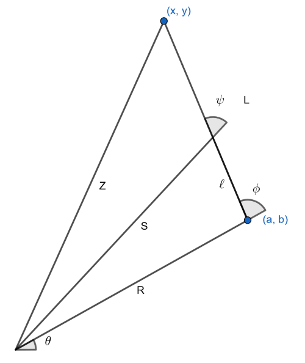

Week 13 (12-13?): Build a Planimeter
Contents
Week 13 (12-13?): Build a Planimeter#
Laboratory 9
Last updated July 07, 2022
00. Content #
Mathematics
Fundamental Theorem of Calculus
Fundamental Theorem for Line Integrals
Green’s Theorem
Partial Derivatives
Vector Fields
Path Integrals
Double Integration
Programming Skills
Type here
Embedded Systems
Thonny and MicroPython
0. Required Hardware #
Microcontroller: Raspberry Pi Pico
Breadboard
USB connector
Rotary encoder
Rolling platform
Fixed or adjustable arm
Tracer (like a pencil or pen)
Write your name and email below:
Name: me
Email: me @purdue.edu
1. Green’s Theorem #
Recall the Fundamental Theorem of Calculus. If the function \(f(x)\) is continuous on the closed interval \([a,b]\) and \(F'(x)=f(x)\), i.e., \(F\) is an antiderivative of \(f\), then
We also have seen the Fundamental Theorem for Line Integrals. Suppose the smooth curve \(C\) is parameterized by \(\mathbf{r}(t), a \leq t \leq b\) and \(f\) is differentiable with gradient \(\nabla f\). Then,
Green’s Theorem is an extension of the Fundamental Theorem of Calculus to two dimensions. In a general sense, the theorem relates line integrals to double integrals, and more specifically, Green’s Theorem tells us that we can calculate a double integral over a region using only information on the boundary of that region. Suppose the region \(D\) is bounded by a simple, smooth, closed curve \(C\) which is parameterized in a counter-clockwise direction. If the two-dimensional vector field \(\mathbf{F}(x,y)=\langle P(x,y),Q(x,y)\rangle\) is such that \(P\) and \(Q\) have continous partial derivatives on \(D\), then
where \(Q_x = \frac{\partial Q}{\partial x}\) and \(P_y = \frac{\partial P}{\partial y}\).
2. Planimeters #
One really neat application of Green’s Theorem is that we can calculate the area of a region simply by measuring the boundary. A planimeter is an instrument that does exactly this! The first planimeters were invented as early as 1814 due to a need to calculate land area. In the late 19th century, planimeters became more popular, different internal mechanisms were developed, and even specialty planimeters emerged to calculate things like engine horse-power. More modern uses include finding leaf area in botany and measuring the area of cross-sectional regions from MRI images. All planimeters have a tracer point, a pivot point, and a measuring wheel or mechanism that measures rotation. Here are some examples.


The left image is of a polar planimeter. It has two arms and is fixed at one end while the arm with the tracer point is able to move in a circular region around the fixed point. The center image is of a rolling planimeter. This kind of planimeter is able to move freely on a linear path. The right image is of a modern rolling planimeter that is still being produced.
Watch this 18 second animation of a rolling planimeter. Notice that the gray roller only moves forward and backward on a fixed path, and the yellow arm pivots at the point \(B\). As the arm pivots, the marked wheel at the back rotates and skids as the tracer point at \(A\) follows the red curve. As the tracer follows the curve the marked wheel will rotate some amount. We will prove that the area of the region is length of the tracer arm (the length from \(A\) to \(B\)) multiplied by the total rolling distance of the wheel after the tracer completely follows the curve counter-clockwise.
Why Do Rolling Planimeters Work?#
Later in the lab, we are going to build a rolling planimeter, so let’s first understand why these instruments work. To calculate area in two dimensions
Remember in Green’s Theorem, \(\mathbf{F}(x,y)=\langle P(x,y),Q(x,y)\rangle\) and
So to calculate area, we need a function \(\mathbf{F}(x,y)\) such that \(Q_x-P_y = 1\).
If \(\mathbf{F}(x,y)=\langle 0,x \rangle\), then
This leads us to an important result:
Exercise 1 #
In our proof, we specifically chose \(P(x,y)=0\) and \(Q(x,y)=x\), but there are infintely many pairs of \(P(x,y)\) and \(Q(x,y)\) with the property that \(Q_x-P_y = 1\). Edit this cell to fill in three different pairs of functions \(P\) and \(Q\) such that \(Q_x-P_y = 1\).
Write Answers for Exercise 1 Below
\(P(x,y) = \), \(Q(x,y) = \)
\(P(x,y) = \), \(Q(x,y) = \)
\(P(x,y) = \), \(Q(x,y) = \)
We write points on the curve \(C\) as ordered pairs \((x,y)\). In the diagram below (from here), the pivot point is at \((0,Y)\) so the roller moves up and down the \(y\)-axis. The tracer arm is length \(L\) and the distance from the wheel to the pivot is \(l\).

Say we move a very small distance counter-clockwise along the curve \(C\) from the point \((x,y)\) to \((x+dx,y+dy)\). Then, the pivot point will move from \((0,Y)\) to \((0,Y+dY)\). We want to know how much the measuring wheel turns as a result of this small motion. If we first move the roller forward without moving the tracer arm, then the tracer moves from \((x,y)\) to \((x,y+dY)\). Next, we move the tracer arm by \(d \theta\) without moving the roller. Now we are at the point \((x+dx,y+dy).\) The wheel only rolls with motion that is perpendicular to the tracer arm. The distance the wheel rolls is
\(\begin{align*} \text{total wheel roll} &= \text{wheel roll from translation} + \text{wheel roll from rotation}\\ &= \text{distance between the parallel lines} + \frac{d\theta}{2\pi}\cdot 2l\pi \\ &= \sin(\phi)dY + ld\theta \\ &= \frac{x}{L}dY + ld\theta. \end{align*}\)
If we integrate over \(C\) the total wheel roll, then
Exercise 2 #
Explain why \(\oint_C d\theta = 0.\)
Write Answers for Exercise 2 Below
We are almost there. We only need to relate \(\frac{1}{L} \oint_C x\,dY\) to the area of \(D\), which we found to be \(\oint_C xdy\). From the diagram, imagine the right triangle formed by the vertices \((0,Y),(x,y)\), and \((0,y)\). By the Pythagorean Theorem,
From the mechanical design of a rolling planimeter, the tracer arm never passes behind the roller, so \(y \geq Y\) for every point \((x,y)\) on \(C\). That is, \(Y\) is unique given \((x,y)\). Differentiating both sides of \(x^2 + (y-Y)^2 = L^2\), we get
\(\begin{align*} 2x dx + 2(y-Y)(dy-dY) &= 0 \\ x dx + (y-Y)(dy-dY) &= 0 \\ dy-dY &= -\frac{x}{y-Y}dx \\ dY &= dy + \frac{x}{y-Y}dx \\ dY &= dy + \frac{x}{\sqrt{L^2-x^2}}dx \end{align*}\)
Now, the total amount the wheel rolls is
Exercise 3 #
Explain why \( \oint_C \frac{x^2}{\sqrt{L^2-x^2}}dx = 0.\)
Hint: use Green’s Theorem
Write Answers for Exercise 3 Below
Exercise 4 #
Show that the area of \(D\) is \(L\) times the total wheel roll after tracing the curve \(C\) counter-clockwise.
Write Answers for Exercise 4 Below
Great job! One pretty remarkable fact is that at the end, the wheel placement - the length \(l\) - didn’t matter at all! Now we know exactly how a rolling planimeter works. The derivation for how polar planimeters calculate area is very similar. The big difference is that the integration is done in polar coordinates instead of Cartesian coordinates.
3. The Derivation for a Polar Planimeter #
We begin by imposing a coordinate system. Place the stationary pivot at the origin and the tracer at a point \((x, y)\). The “elbow” will be constrained to be at \((a, b)\), a point \(R\) units from the origin and \(L\) units from \((x, y)\). In this way, \(a\) and \(b\) are functions of \(x\) and \(y\).
We place the measuring wheel a distance \(\ell\) from the elbow, along the tracer arm. Let \(S\) denote the distance from the wheel to the origin, and \(Z\) the distance from the tracer to the origin. Let \(c=x-a\), and \(d=y-b\). Then we can summarize many of the relationships succinctly:
The most straightforward way to decompose the motions of the arm are by rotations at the pivots. For this reason, we define a few angles: \(\theta\) the angle from the elbow to the origin, \(\phi\) the exterior angle between the two arms, and \(\psi\) the angle between the tracer arm and a line extending from the origin, at the position of the wheel. All this is summarized in the following diagram:

Let \(w\) denote the amount the wheel moves. Clearly \(\frac{\partial w}{\partial \phi}=\ell\). Furthermore, since the wheel only picks up the component of its motion perpendicular to the rod, \(\frac{\partial w}{\partial \theta} = S\cos\psi\). The chain rule allows us to write the change in \(w\) in terms of its component parts,
\[ dw = \ell d\phi + S\cos\psi d\theta. \]
Since we are controlling the motion of the planimeter at \(x\) and \(y\), we should do what we can to put this formula in terms of \(x\) and \(y\). Notice the projection of line \(S\) onto \(L\) is just \(\ell\) units more than the projection of line \(R\) onto \(L\). Therefore,
\[ S\cos\psi = R\cos\phi +\ell. \]
We can go a step further and apply the law of cosines,
\[ Z^2=R^2+L^2+2RL\cos\phi, \]
to get rid of the \(\cos\phi\). All together, this gives us a nicer formula,
\[ dw = \ell d\phi + \left(\ell + \frac{Z^2-R^2-L^2}{2L}\right)d\theta. \]
This is a nicer formula because everything except \(Z\) is a constant.
Exercise 5 #
Explain why \(\oint \ell d\phi\) and \(\oint \ell-\frac{R^2+L^2}{2L}d\theta\) are both zero, when you integrate over an entire loop. Explain how this reduces the integral to \(w=\oint dw = \oint \frac{Z^2}{2L}d\theta\).
Write Answers for Exercise 5 Below
Change of coordinates#
Our goal is to apply Green’s theorem, which is given in Cartesian coordinates as
\[ \oint Pdx+Qdy = \iint \frac{\partial Q}{\partial x}-\frac{\partial P}{\partial y} dxdy. \]
To get our integral into Cartesian coordinates we will use the chain rule. In this case that gives
\[ d\theta = \frac{\partial \theta}{\partial x}dx + \frac{\partial \theta}{\partial y}dy. \]
What is the formula for \(\theta\) in terms of \(x\) and \(y\)? We can find the angle between \((a, b)\) and \((x, y)\) using the law of cosines,
\[ \arccos\left(\frac{R^2+Z^2-L^2}{2RZ}\right). \]
The total angle from \((x, y)\) to the origin is \(\arctan(y/x)\). \(\theta\) must therefore be their difference,
\[ \theta = \arctan(y/x)-\arccos\left(\frac{R^2+Z^2-L^2}{2RZ}\right). \]
From this we can compute the derivatives we need. Actually, to keep things tidy, let’s write \(h(Z)=-\arccos\left(\frac{R^2+Z^2-L^2}{2RZ}\right)\). For reasons which will become apparent, we won’t actually need to compute the derivatives of \(h\), so it’s better to leave it symbolic.
Exercise 6 #
Explain why \[ \frac{\partial}{\partial x} h(Z) = \frac{x}{Z} h’(Z). \]
Write Answers for Exercise 6 Below
Putting the formula together#
All this comes together into one grand formula:
We are now ready to apply the Green’s theorem. We will need some partial derivatives.
Now it is clear why we don’t need to worry about computing \(h'(Z)\). When we subtract, those terms will cancel.
There we have it: the distance on the wheel will be exactly the area of the region, divided by the tracer arm length L.
Exercise 7 #
When a very large area is to be measured, the manual for my planimeter suggests placing the fixed end in the center of the region and moving the tracer in a full loop around it. When you do this, one of the terms which disappeared in the calculation above is no longer zero. Which term would it be? What would you need to do with your answer to get an accurate number, when using this strategy?
Write Answers for Exercise 7 Below
4. Building a Planimeter #
TODO: include directions for how to wire the planimeter we use.
Exercise 8 #
To test out your planimeter, measure some well known shapes like circles, rectangles, etc. Describe how close your estimates are to the exact area.
Write Answers for Exercise 8 Below
Exercise 9 #
Print out a map to calculate area of Indiana or some other state/country with a well known land area. Use your planimeter to measure the area. How close are your calculations? Keep in mind the scale of the map you print.
Write Answers for Exercise 9 Below
Reflection #
1. What parts of the lab, if any, do you feel you did well?
2. What are some things you learned today?
3. Are there any topics that could use more clarification?
4. Do you have any suggestions on parts of the lab to improve?